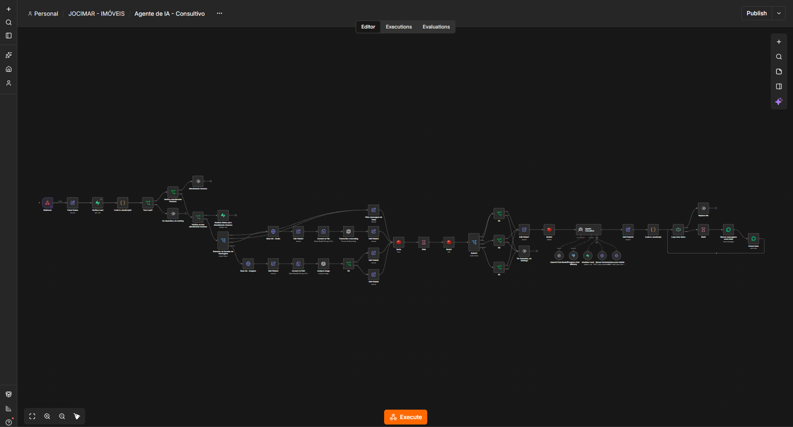

Captação de leads
Recebimento de informações enviadas por formulários, incluindo dados de contato e parâmetros de origem.
Projeto de integração entre formulários, automações, banco de dados, WhatsApp e agentes de inteligência artificial para apoiar processos comerciais.
Visão simplificada das tecnologias envolvidas na captação, processamento, armazenamento e atendimento de leads.
Captação de leads e dados de origem.
Webhooks, automação e integrações.
Registro, consulta e gestão dos dados.
Interpretação e qualificação dos leads.
Atendimento e interação com clientes.
A captação de contatos por diferentes canais exige organização das informações, identificação da origem dos leads e continuidade no atendimento comercial.
O projeto busca reduzir tarefas manuais, integrar os dados e facilitar o atendimento por meio de automação e inteligência artificial.
Recebimento de informações enviadas por formulários, incluindo dados de contato e parâmetros de origem.
Processamento dos dados, aplicação de regras de negócio e integração entre os serviços envolvidos.
Armazenamento e consulta de informações para apoiar o controle dos leads e do atendimento.
Utilização de agentes de inteligência artificial integrados ao WhatsApp para interação, qualificação e encaminhamento dos contatos.
Visão geral do fluxo de atendimento comercial inteligente, com processamento de dados, validações, integrações e agentes de IA.

A arquitetura foi desenvolvida para centralizar informações, diminuir atividades repetitivas, organizar o fluxo de atendimento e permitir maior continuidade nas interações com os potenciais clientes.
A solução também permite evoluir a integração entre sistemas, estratégias comerciais e recursos de inteligência artificial.